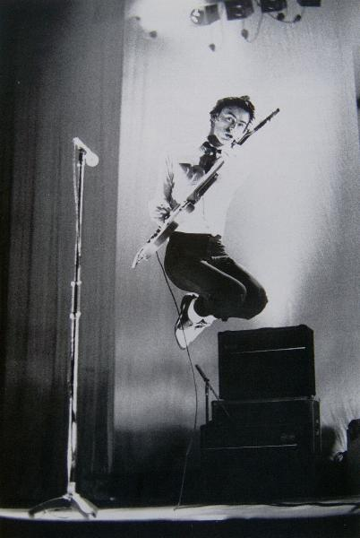

| Pennie Smith | ||
| Back 14/28 |
 | Next 16/28 |
Transparently in the throes of his Pete Townshend fixation, Paul Weller delivers songs from The Jam's first album, In The City, during a club date in the summer of '77. He would later write such powerfully affecting sketches of fiercely class-conscious suburban life as Strange Town, The Modern World and The Eton Rifles. |